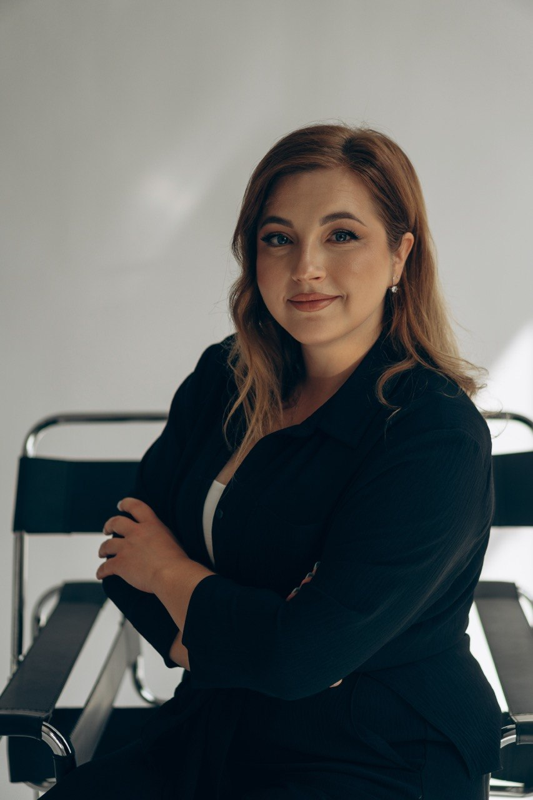

Тревога и беспокойство
Когда мысли о будущем и напряжение мешают повседневной жизни.
Я психологиня, создающая безопасное пространство для честной встречи человека с собой.
Индивидуальные психологические консультации на русском и украинском языках — онлайн, в удобном для вас месте.
Записаться на консультацию1000 Kč · онлайн

Тревога, хронический стресс, эмоциональное истощение, трудности в отношениях и адаптации часто становятся поводом обратиться за поддержкой. Это возможные темы для разговора, а не обещание результата или медицинский диагноз.
Когда мысли о будущем и напряжение мешают повседневной жизни.
Когда нагрузка стала слишком большой и трудно восстановиться.
Когда хочется понять повторяющиеся трудности в общении и близости.
Когда сложно замечать свои потребности и доверять решениям.
Переезд, перемены и нехватка привычной поддержки могут быть непростыми.
Можно обсудить переживания о развитии и поведении ребёнка; при необходимости Валерия поможет сориентироваться, к какому специалисту обратиться.
Темы отражают вопросы, которые чаще обсуждали терапевты в отчёте BACP 2025: тревога, самооценка, одиночество, выгорание и общение. Источник: BACP Mindometer 2025.
Валерия Гуровская — практикующий психолог с магистерским образованием по психологии, полученным в Украине. В работе использует подход транзактного анализа; окончила курс ТА‑101 и другие курсы по транзактному анализу. До психологической практики семь лет преподавала программирование детям и вела занятия по психологическому развитию. Работала с детьми с разными особенностями развития, в том числе с ДЦП и аутизмом. Этот опыт помогает ей внимательно относиться к индивидуальным особенностям ребёнка и семьи.
Документы об образовании и пройденном обучении Валерии.
Индивидуальная консультация онлайн. Встреча проходит дистанционно, поэтому вы можете находиться в комфортном для себя месте.
Длительность и другие детали встречи можно уточнить при записи.
Онлайн. Платформу и ссылку для подключения Валерия согласует с вами после записи.
На русском или украинском — выбирайте язык, на котором вам комфортнее.
Способ оплаты и условия переноса или отмены можно уточнить у Валерии при записи.
Этот сайт не является службой экстренной помощи. При непосредственной опасности звоните 112.
Заполните короткую форму. Валерия свяжется с вами, чтобы ответить на вопросы и обсудить время встречи.
Напишите Валерии, чтобы уточнить свободное время для онлайн-консультации.
WhatsApp · Записаться на консультацию